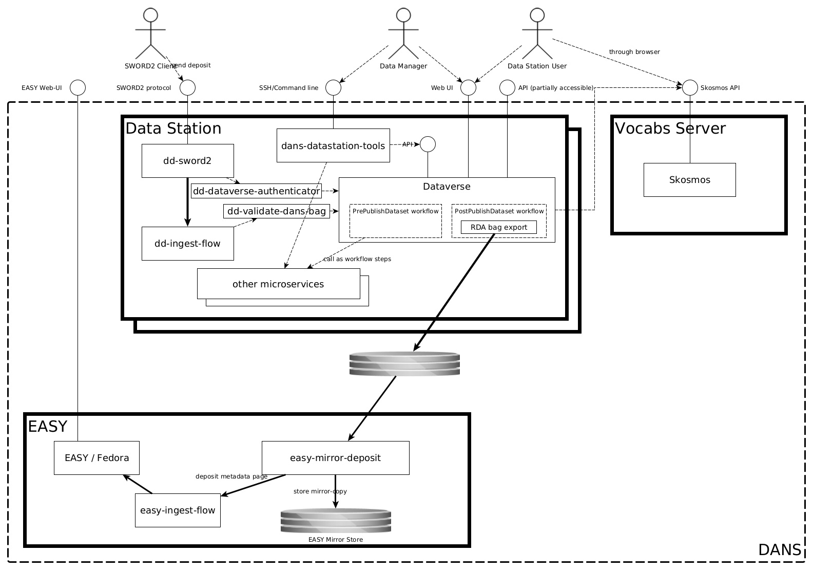

Mirroring to EASY¶
Until a Data Station obtains the Core Trust Seal (CTS), it will mirror all deposited dataset to EASY, thus ensuring that these datasets are stored in a trusted repository. This temporary configuration swaps out the Transfer Server for the EASY server.
